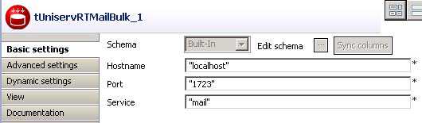
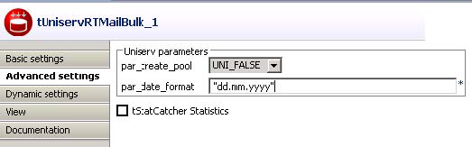

Avertissement
Ce composant est disponible dans la Palette du Studio uniquement si vous avez souscrit à l'édition correspondante de Data Quality Service Hub Studio.
|
Famille de composant |
Data Quality | |
|
Fonction |
Le tUniservRTMailBulk créé un pool d'index pour mailRetrieval avec des données d'entrée prédéfinies. | |
|
Objectif |
Le tUniservRTMailBulk prépare le pool d'index pour la recherche de doublons. | |
|
Basic settings |
Schema et Edit schema |
Un schéma est une description de lignes, il définit le nombre de champs qui sont traités et passés au composant suivant. Le schéma est soit local (Built-in) soit distant dans le Repository. |
|
|
Host name | Nom de l'hôte du serveur, entre guillemets doubles. |
|
|
Port | Numéro du port d'écoute du serveur, entre guillemets doubles. |
|
|
Service |
Le nom du service est |
|
Advanced settings |
Uniserv Parameters |
Pour plus d'informations, veuillez consulter le manuel utilisateur Uniserv mailRetrieval. |
|
|
tStatCatcher Statistics | Cochez cette case pour collecter les données de log au niveau du Job et de chaque composant. |
|
Usage |
Le tUniservRTMailBulk prépare le pool d'index pour une recherche de doublons. | |
|
Limitation |
Pour utiliser le composant tUniservRTMailBulk, le logiciel Uniserv doit être installé. Vous aurez besoin d'un composant d'entrée et d'un composant de mapping pour lire l'adresse provenant d'une base de données ou d'un fichier. Le composant ne possède pas de connexion de sortie. | |
Ce scénario décrit un Job chargeant une liste d'adresses d'une base de données SQL vers un pool d'index.
La base de données de ce scénario est déjà sauvegardée dans le Repository, toutes les métadonnées de schéma sont donc déjà disponibles.
Dans la vue Repository, développez le nœud Metadata et le répertoire dans lequel est sauvegardé le fichier. Glissez ce fichier dans l'espace de modélisation graphique.
La boîte de dialogue suivante s'ouvre :

Sélectionnez le composant tMysqlInput et cliquez sur OK pour fermer la boîte de dialogue.
Le composant apparaît dans l'espace de modélisation graphique.
Glissez les composants suivants de la Palette dans l'espace de modélisation graphique: tMap et tUniservRTMailBulk.
Connectez les composants à l'aide de liens Row > Main, comme illustré ci-dessous.

Acceptez le schéma du tUniservRTConvertName en cliquant sur Yes dans la fenêtre qui apparaît.

Double-cliquez sur le tMap_1 pour ouvrir la fenêtre de mapping. À gauche se trouve le schéma du fichier de la base de données et à droite se trouve le schéma du tUniservRTMailBulk (et donc l'entrée du Job). En bas se trouve le Schema editor, où vous pouvez trouver et éditer les attributs de chaque colonne.

Assignez les colonnes de la source d'entrée à leurs colonnes du tUniservRTMailBulk respectives. Pour ce faire, sélectionnez une colonne de la source d'entrée et glissez-la dans la colonne du même nom du côté droit. La signification de chaque argument est décrite dans le manuel utilisateur Uniserv mailRetrieval.
Cliquez sur OK pour fermer la fenêtre de dialogue.
Double-cliquez sur le tUniservRTMailBulk pour ouvrir sa vue Basic settings.
Renseignez les informations relatives au serveur et spécifiez le service.
Dans la vue Advanced settings, adaptez les paramètres serveur.
